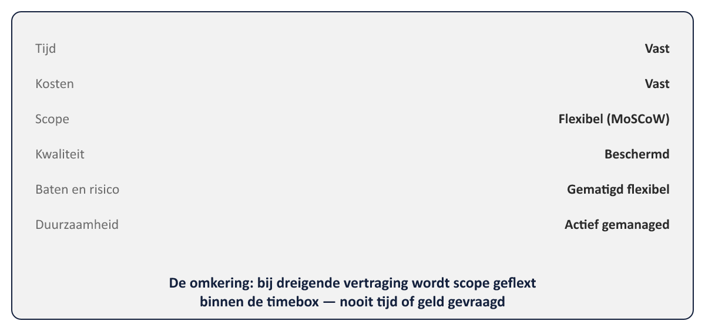

Sheet 1Titel
Project- en Programmamanagement
Niveau 2 · Deel 16: PRINCE2 Agile en hybride levering
Sheet 2Niet elk project levert hetzelfde op
Tranches: wélke projecten wanneer
Dit deel: hóe elk project wordt uitgevoerd
MSP: multimodal delivery
Sheet 3Wat blijft, wat verandert
PRINCE2’s principes/practices/processen: volledig intact
Wat verandert: hoe binnen een fase wordt gewerkt en gerapporteerd
Sheet 4Vijf targets for agility
1. Altijd op tijd leveren
2. Kwaliteit beschermen
3. Verandering omarmen
4. Teams stabiel houden
5. Accepteren: niet alles is nodig
Sheet 5De hexagon

Tijd/kosten: vast · Scope: flexibel (MoSCoW) · Kwaliteit: beschermd
Baten/risico: gematigd flexibel · Duurzaamheid: actief gemanaged
Sheet 6De omkering
Traditioneel: vertraging → meer tijd/geld vragen
PRINCE2 Agile: vertraging → scope flexen binnen de timebox
Sheet 7Vijf agile gedragingen
Transparantie · Samenwerking · Rijke communicatie · Zelforganisatie · Exploratie
Sheet 8De Agilometer

Flexibiliteit op te leveren · Samenwerking · Communicatiegemak
Iteratief vermogen · Gunstige omgeving · Acceptatie van agile
Sheet 9Nooit middelen
Eén lage score = een specifiek risico
Gemiddelde verbergt precies wat je moet zien
Sheet 10Cynefin
| Domein | Oorzaak-gevolg | Beste aanpak | Voorbeeld (Mutatieplatform) |
|---|---|---|---|
| Simpel/duidelijk | Bekend | Voorspellend (product-based planning) | — |
| Gecompliceerd | Met expertise te achterhalen | Voorspellend (product-based planning) | Kernsysteemkoppeling — vaste technische interfaces |
| Complex | Pas achteraf te begrijpen | Iteratief: proberen, waarnemen, bijsturen | Portaal-UI — wensen tekenen zich pas af na feedback |
| Chaotisch | Geen tijd voor analyse | Eerst handelen om stabiliteit te herstellen, dan evalueren | — |
Simpel/gecompliceerd → voorspellend plannen
Complex → iteratief: proberen, waarnemen, bijsturen
Chaotisch → eerst handelen, dan analyseren
Sheet 11Fase en sprint
Een beheersfase kan meerdere sprints bevatten
Highlight Report → burn-up/burn-down, cumulatieve flow, definition of done
Sheet 12Rollen: verwant, niet identiek
Senior User → productowner-achtige rol
Projectmanager → blijft PRINCE2-besturing
Scrum Master/delivery lead → nieuwe, teamniveau-rol naast de projectmanager
Sheet 13Toegepast: Programma Mutatieplatform
WGP 2.0-portaal: agile — gebruikersgericht, baat bij feedback
Kernsysteemkoppeling: voorspellend — vaste interfaces
Trainingsprogramma: hybride
Sheet 14Vooruitblik
Deel 17: planning en beheersing op programmaschaal — agile en traditionele projecten naast elkaar